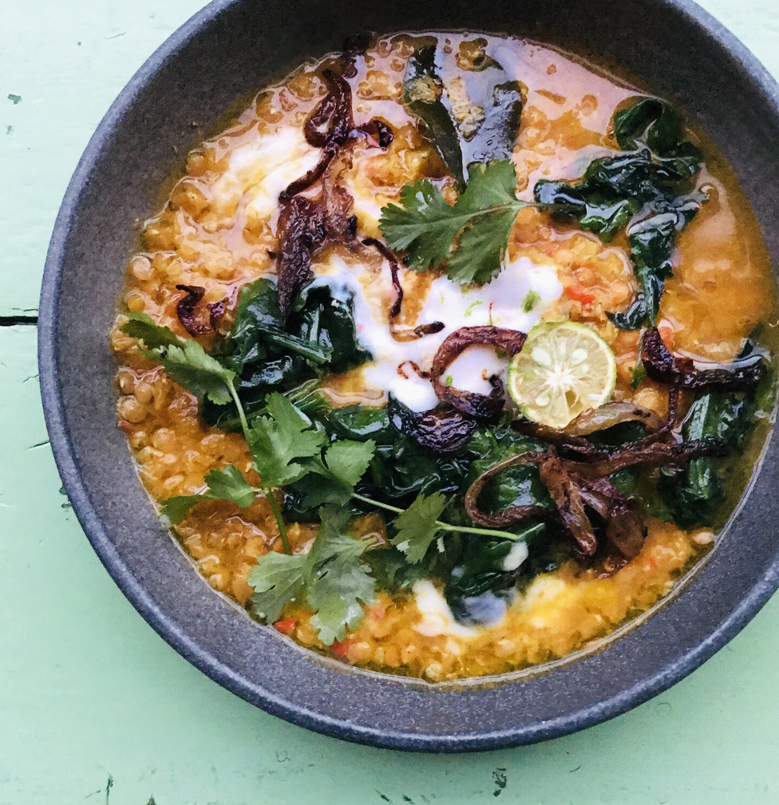
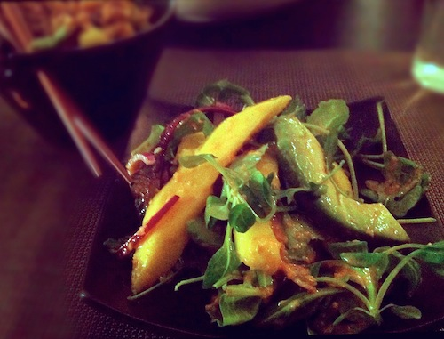
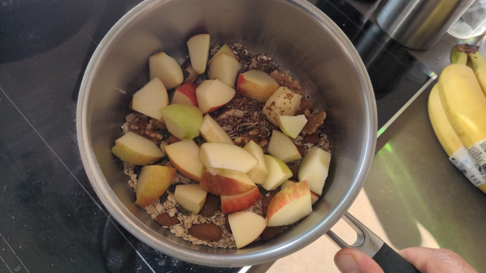

Een klassieker uit het Groot Europees Kookboek van Martin van Huijstee (1991).
Ik vind het zonde om asperger helemaal onder te dompelen in kaassaus met ham. Dit is veel beter.
Een favoriet van Hello Fresh.

Rode linzensoep met bumbu pepesan met garam masala-uien, paksoi en yoghurt.
De inleiding van deze klassieker, wat eigenlijk gewoon Nederlands-Indisch cultureel erfgoed is.
Makkelijke, frisse couscous salade met een heerlijke combinatie van smaken. Met granaatappelpitjes, feta en munt. Recept van Eef kookt zo.
Een vegetarische variant van een Amerikaanse klassieker. Van Hello Fresh.
Buffalo wings is een populair recept uit de Verenigde Staten. Het recept uit Boordevol Groente (externe link) is een versie met bloemkoolroosjes uit de oven met harissa.
Variant op Oostenrijkse goulash.
Deze soep kun je in feite maken met alle groenten die je nog in je koelkast heb liggen en die op moeten, want vrijwel alle combinaties werken.
Een Japanse favoriet bij ons thuis.
Er zijn vele verschillende soorten Pad Thai zo kun je dit gerecht maken met vis, garnalen, vegetarisch of zoals ik deed, met kip. Lekker en makkelijk.
Easy alternative to plain boiled broccoli.
Yakisoba is a classic Japanese stir fry noodles dish with pork and vegetables, and it’s seasoned with a sweet & savory sauce similar to Worcestershire sauce.
Een Indonesische klassieker
Een moderne variant op een Thaise klassieker.
I used to eat this a lot as a kid in Indonesia.
Delicious sautéed spinach with mushrooms and caramelized Onions is a favorite side dish for grilled meats. This vegetarian dish is quite versatile: you can eat it as-is, or…
Recept zoals de soep op de skipisten in Tirol geserveerd wordt, met een kleine Nederlandse twist.
Nog een klassieker van Ottolenghi.
Koreaanse streetfood.
Een klassieker van Ottolenghi, uit Simpel
Een klassieker van Ottolenghi, uit Simpel.
Ook bekend als tahu Semarang.
Makkelijk te maken, kan ook gecombineerd worden als vulling voor bao buns.

Een salade van Wagamama, met een goddelijke combi van mango en avocado met een pittige dressing.
Gua Bao are fluffy bao buns stuffed with tender sticky pork belly. This recipe is easy to make, using frozen buns from the supermarket.
Recept uit de film Ratatouile, van Janneke Vreugdenhil.
Romig, kruidig, fris en boordevol smaak: dit gerecht heeft alles wat je zoekt in een snelle, makkelijke en indrukwekkende maaltijd.

Terwijl ik op bezoek was in St Neots, kreeg ik dit voorgeschoteld op zondagochtend.
Extremely delicious dish that’s quick and straightforward to make, but looks as if it’s been prepared at a top Chinese restaurant.
Have changed the ingredients to make suitable for quick preparation.
Japanse pannenkoek
From Ottolenghi’s Simple.
Een klassieker, maar dan zonder varkenskluif. Waarschijnlijk wel met worst erbij …
Een heerlijke bloemkool ovenschotel met gehakt, spekjes, krieltjes en kerrie. Je kunt de ovenschotel prima van te voren maken waardoor je hem op een doordeweekse avond zo…
Nederlandse gebakken vis is best lekker.
Makkelijk zelf te maken, met kant-en-klare roti uit de toko.
Uit ‘Rijsttafelen’ van Lia Warani.
An authentic recipe for a hearty version of Moroccan harira, a zesty tomato, lentil and chickpea soup.
Hét recept voor minestrone bestaat niet, dus maak ’m zoals je wilt, schrijft Janneke Vreugdenhil over dit recept. Maar vergeet niet de Parmezaankorsten, dat zijn…
Een fusion gerecht van Janneke Vreugdenhil uit het NRC Handelsblad van 20 mei 2023.
Een favoriet van de jongens, recept van mijn schoonvader.